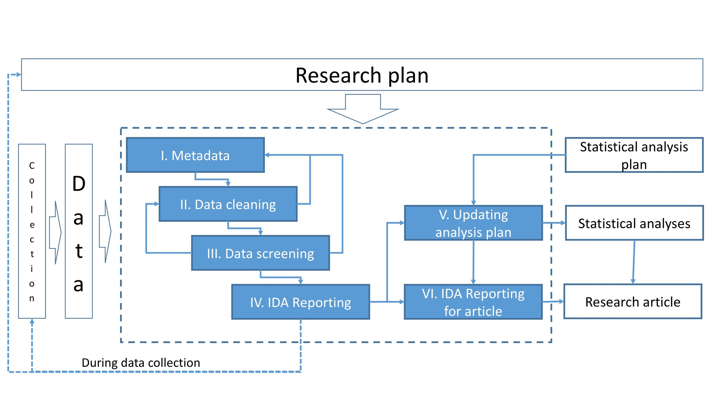

1 IDA Framework
The IDA framework consists of six steps Huebner, Vach, and le Cessie (2016) (figure 1).
Here we assume that metadata (step I) exist in sufficient detail, and that data cleaning (step II) was already performed. Metadata summarize background information about the data to properly conduct IDA steps, and a data cleaning process identifies and corrects technical errors. The data screening (step III) examines data properties to inform decisions about the intended analysis. Initial data reporting (step IV) document insight of the previous steps and can be referred to when interpreting results from the regression modeling. Consequences of these analyses can be that the analysis plan needs to be refined or updated (step V). Finally, reporting of IDA results in research papers (step VI) are necessary to ensure transparency regarding key findings that influence the analysis or interpretation of results. Further details about the elements of IDA are discussed in Huebner et al. (2020).

Huebner M, Vach W, le Cessie S, Schmidt C, Lusa L. Hidden Analyses: a review of reporting practice and recommendations for more transparent reporting of initial data analyses. BMC Med Res Meth 2020; 20:61. Link